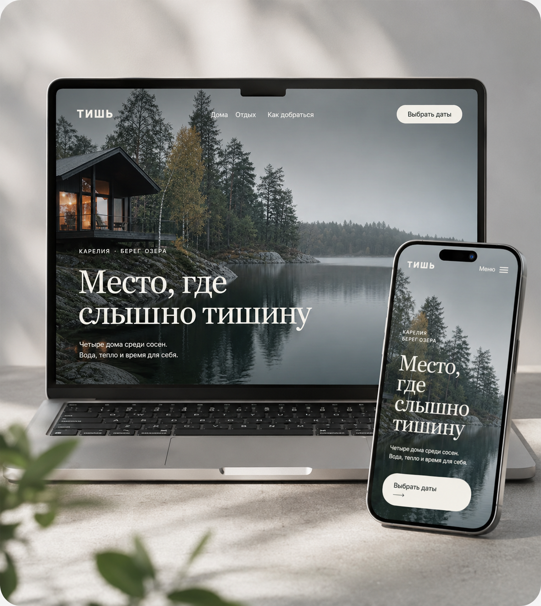
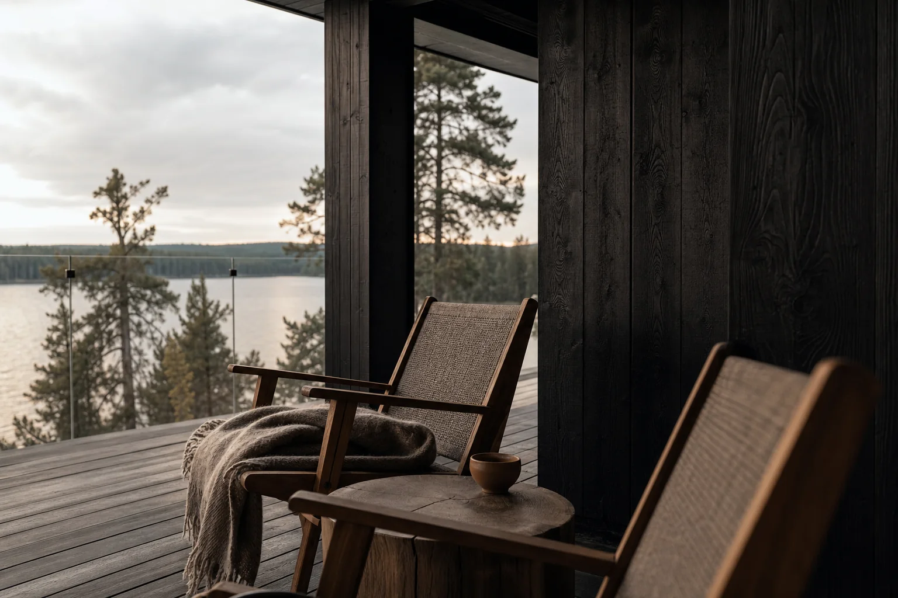

тишь

- задача:
- создать спокойный лендинг для выбора дома и быстрого бронирования отдыха
- результат:
- адаптивный интерфейс, фирменный стиль и понятный сценарий бронирования
- срок:
- 2 недели
концепт
В основе концепции — ощущение длинной паузы вдали от города. Воздух в композиции, спокойная природная палитра и крупные фотографии передают тишину северного озера, а короткие фразы и заметные действия помогают быстро выбрать дом и перейти к бронированию.


палитра
логобук
Словесный знак построен на широких буквах и увеличенных паузах — так даже название визуально звучит тише. Круглый знак отсылает к отражению луны в воде и работает как самостоятельная метка на носителях.
в воде

настольная версия
Страница ведёт от атмосферы места к выбору дома, показывает включённые впечатления и завершает сценарий короткой формой. Повторяющийся призыв выбрать даты остаётся заметным, но не спорит с фотографиями.

Место, где
слышно тишину
Четыре дома среди сосен.
Вода, тепло и время для себя.
Не уезжать от жизни,
а возвращаться к ней
Просыпайтесь у воды, гуляйте без маршрута и оставайтесь у огня столько, сколько захочется.
4 домана первой линии
Выберите свой вид
на тишину
Дом «Сосна» · до 4 гостей Дом «Вода» · до 2 гостей
Дом «Вода» · до 2 гостей
Лодка, сауна,
завтрак и лес
- Тихая прогулка по озеру
- Сауна с видом на воду
- Завтрак у двери каждое утро
«Здесь впервые за долгое время не хотелось проверять время»Анна и Михаил · три ночи в доме «Сосна»
Выберите даты
для своей паузы
18 сентябряВыезд
21 сентябряГости
2 взрослыхНайти дом →
мобильная версия
На небольшом экране сохраняются крупные фотографии, спокойный ритм и быстрый доступ к выбору дат. Карточки домов и форма перестраиваются в последовательный вертикальный сценарий.
слышно тишинуВыбрать даты →
Выберите свой
вид на тишину
Дом «Сосна»До 4 гостей · сауна · вид на озеро
Дом «Вода»Тепло внутри,
озеро перед вами
- 2 гостя
- своя сауна
- завтрак включён
Когда вы хотите
приехать?

состояния страницы
Дополнительные состояния поддерживают тот же визуальный язык: меню не перекрывает атмосферу, календарь оставляет только важные данные, а подтверждение завершает путь коротким и спокойным сообщением.
Сентябрь
2 взрослых− 2 +
Дом ждёт вас
Заявка отправлена. Мы свяжемся с вами в течение часа и подтвердим бронирование.
Вернуться на главную →